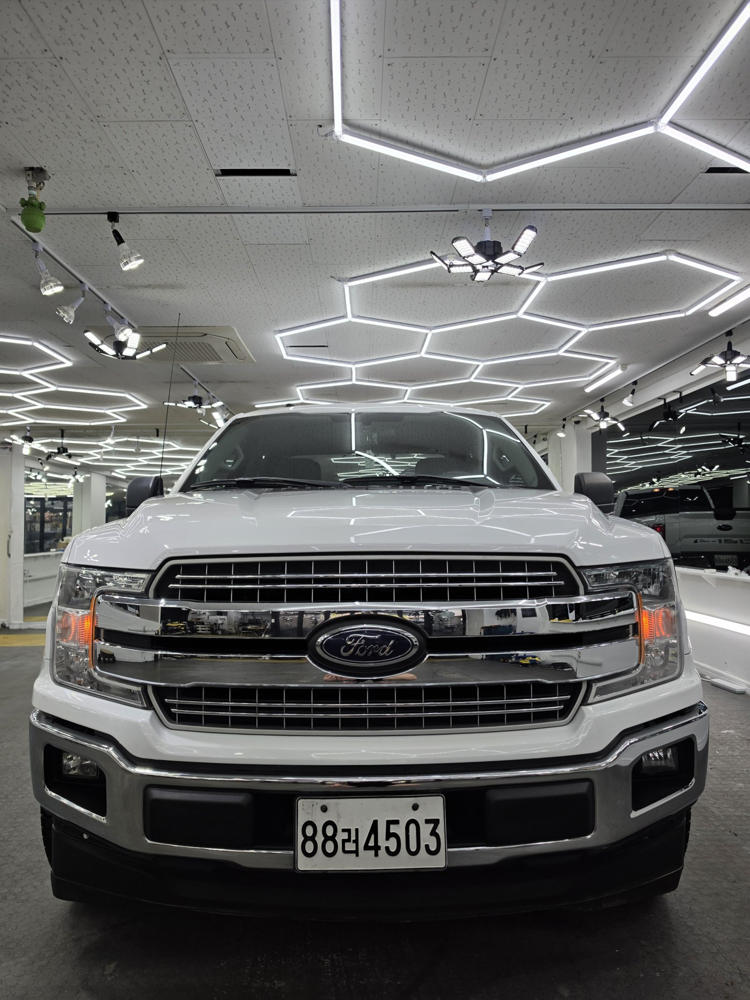
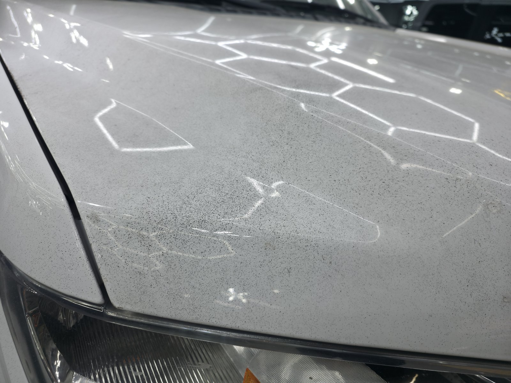
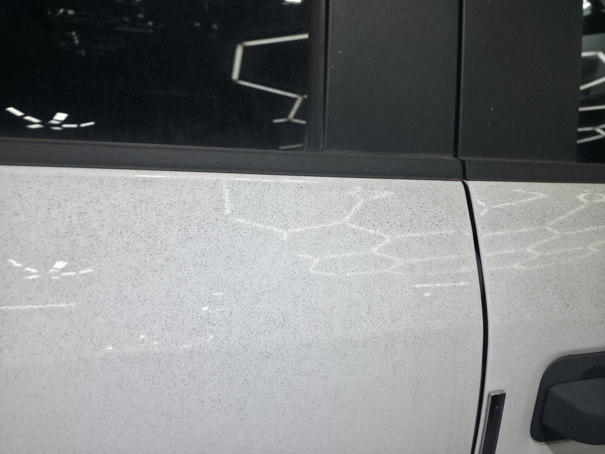
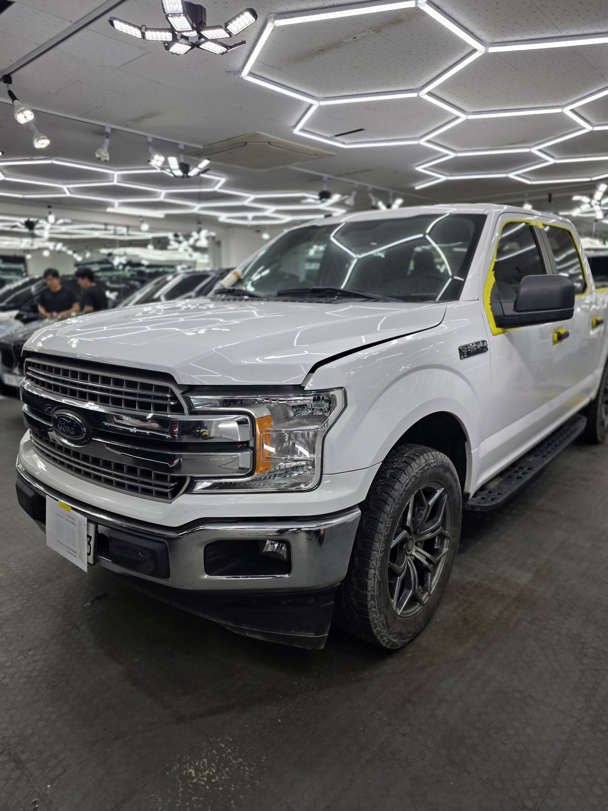
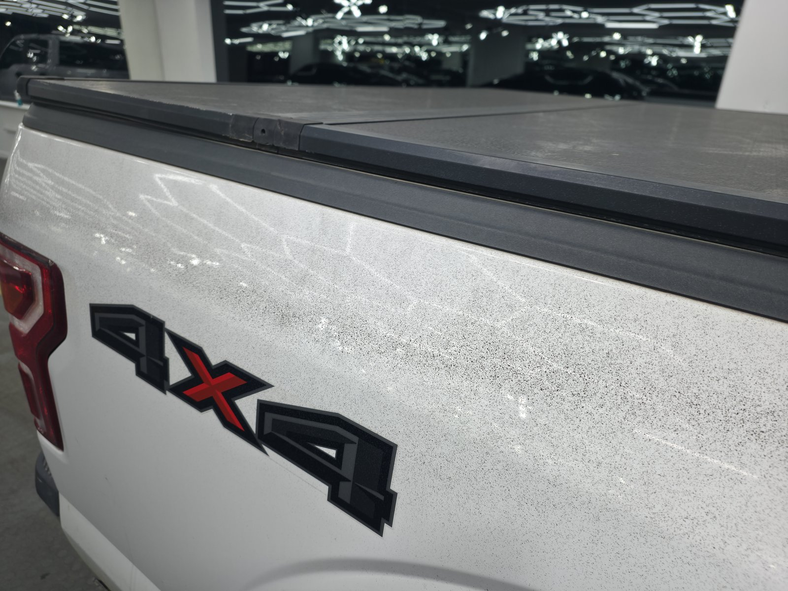
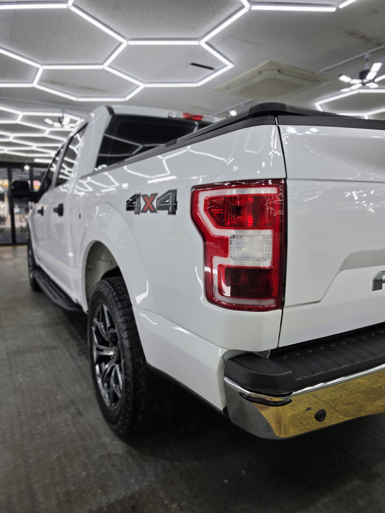
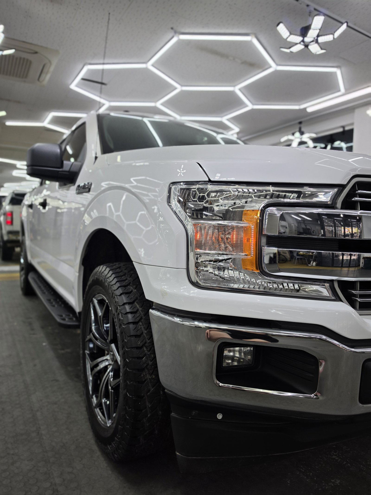
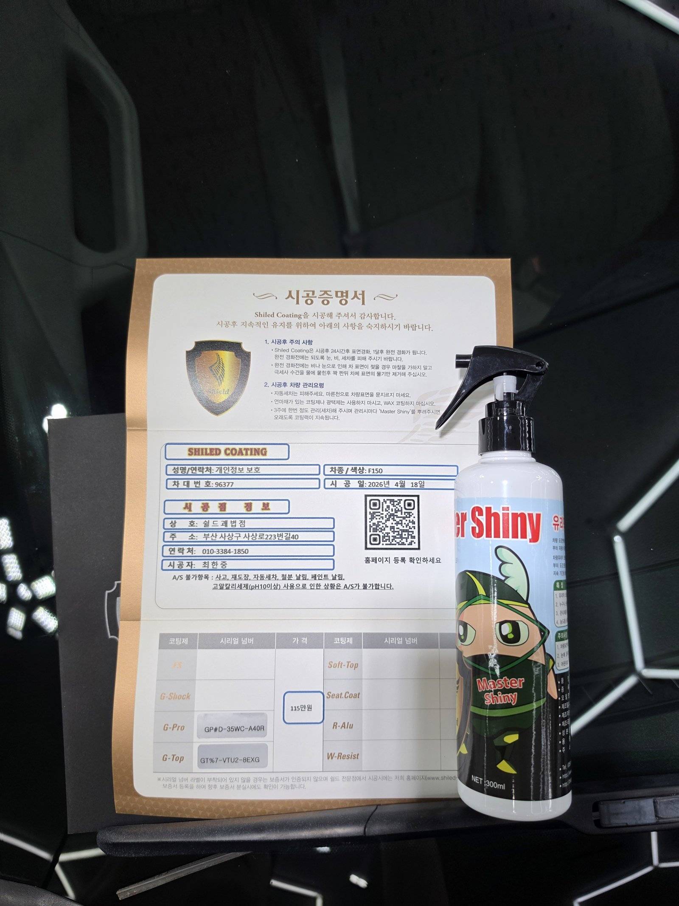

포드 F150입니다.
부산에서 흔히 보기 힘든 미국 픽업트럭입니다.
세차를 해도 도장면이 계속 까끌거린다는 문의로 들어오셨습니다.
손으로 훑어보니 바로 답이 나왔습니다. 페인트 날림입니다.
부산 광택 작업 중에서도 이 정도 크기의 픽업트럭은 자주 만나지 못합니다.

포드 F150 본넷, 왜 이렇게 심하게 앉았나
본넷과 루프를 보니 검은 입자가 빽빽했습니다.
흰색 도장이라 오히려 입자 하나하나가 더 잘 보였습니다. 근처에서 도장 작업이나 공사가 있으면 공중에 흩어진 도료가 미세한 방울로 날아와 차체 위에 내려앉고, 그대로 굳어버립니다. 물로 씻으면 표면 먼지만 빠지고 굳은 입자는 그 자리에 그대로 박혀 있습니다.
픽업트럭이라 면적도 훨씬 넓습니다. 같은 날림이라도 걷어내야 할 구간이 세단보다 훨씬 늘어납니다.

작업 전. 본넷 전체에 검은 입자가 고르게 앉아 있습니다
도어 패널도 상태는 같았습니다. 창틀 아래부터 도어 하단까지 입자가 고르게 퍼져 있었습니다.

도어 패널도 같은 상태였습니다
흔치 않은 차라 마스킹부터 신경 썼습니다
F150은 부산에서 자주 마주치는 차종이 아닙니다.
트림 소재와 고무 몰딩이 국산차와 다른 부분이 있어서, 약품을 쓰기 전에 어디까지 닿아도 되는지부터 확인합니다. 창틀과 사이드미러처럼 약품이 닿으면 안 되는 부분은 마스킹으로 먼저 막아둡니다.

창틀과 사이드미러는 마스킹으로 먼저 보호합니다
부산 광택, 페인트 날림 제거 순서
바로 갈아내면 안 됩니다. 그게 제일 중요합니다.
굳은 입자가 도장면 위에 얹혀 있는 상태에서 패드를 대면, 그 입자가 연마재처럼 도장을 긁고 지나갑니다. 없던 상처를 만드는 셈입니다.
① 디테일링 세차와 철분 제거로 표면 오염부터 걷어냅니다.
② 점토와 전용 약품으로 굳은 도료 입자를 하나씩 떼어냅니다.
③ 광택으로 그 과정에서 남은 미세 자국과 헤이즈를 정리합니다.
픽업트럭은 도어 패널과 적재함 옆면이 넓어서 ②에 시간이 가장 많이 들어갑니다. 넓다고 힘으로 미는 게 아니라 구역을 나눠서 같은 밀도로 훑어야 얼룩이 남지 않습니다.
기술자의 팁
페인트 날림을 확인하는 가장 쉬운 방법은 비닐봉지를 손에 씌우고 도장면을 쓸어보는 것입니다. 맨손으로는 못 느끼는 까끌거림이 비닐 너머로는 확실하게 잡힙니다. 눈으로 안 보여도 손에 걸리면 남아 있는 겁니다.
마감 후, 적재함도 달라졌습니다
테일게이트와 적재함 옆면도 본넷과 같은 상태였습니다.

작업 전. 4X4 레터링 주변까지 입자가 앉아 있습니다

같은 자리, 작업 후. 손끝에 걸리는 게 없어졌습니다
알갱이에 부딪혀 흩어지던 빛이 곧게 맺히기 시작했습니다. 페인트 날림이 있는 도장면은 조명 윤곽이 항상 번져 보입니다. 입자를 걷어내면 같은 조명이 선으로 딱 떨어집니다.
마감은 G-PRO + G-TOP 듀얼코팅으로
입자를 떼어낸 도장면은 그대로 두면 안 됩니다.
표면이 한 번 정리된 상태라 오염이 다시 앉기 쉽습니다. 그래서 G-PRO로 경도를 올리고 그 위에 G-TOP으로 발수·방오를 얹는 듀얼코팅으로 마감했습니다.
G-PRO는 스크래치 내성을 담당하고, G-TOP은 오염이 표면에 붙는 것 자체를 줄여줍니다. 같은 일을 또 겪지 않게 하려면 이 조합이 맞습니다. 코팅제는 제가 직접 개발·제조한 것으로 시공했습니다.

듀얼코팅 후 프론트 그릴. 반사가 또렷하게 섭니다

시공증명서와 관리용 Master Shiny를 함께 드립니다
자주 묻는 질문
Q. 픽업트럭도 페인트 날림 제거가 가능한가요?
A. 가능합니다. 이번 포드 F150도 세단과 같은 방식으로 진행했습니다. 다만 픽업트럭은 도어 패널과 적재함 면적이 넓어서 작업 시간이 더 걸리고, 트림 소재와 몰딩이 국산차와 달라 마스킹부터 꼼꼼히 확인합니다. 순서와 원리 자체는 차종과 관계없이 동일합니다.
Q. 페인트 날림은 세차로 지워지지 않나요?
A. 지워지지 않습니다. 공중에 흩어진 도료가 미세한 방울 상태로 내려앉아 클리어코트 위에서 그대로 굳기 때문입니다. 물과 세제로는 표면 위 오염만 씻겨나가고, 굳어버린 도료 입자는 손끝에 사포처럼 그대로 걸립니다.
Q. 페인트 날림 제거는 어떤 순서로 하나요?
A. 먼저 디테일링 세차와 철분 제거로 표면 오염을 걷어냅니다. 그다음 점토와 전용 약품으로 굳은 도료 입자를 물리적으로 떼어내고, 마지막에 광택으로 그 과정에서 생긴 미세 자국까지 정리합니다. 순서를 건너뛰고 바로 갈아내면 입자가 도장면을 긁고 지나갑니다.
Q. 페인트 날림 제거 후 코팅까지 해야 하나요?
A. 권합니다. 입자를 떼어내는 과정에서 클리어코트 표면이 한 번 정리되기 때문에, 그 상태 그대로 두면 오염이 다시 앉기 쉽습니다. 이번 F150은 G-PRO로 경도를 올리고 G-TOP으로 발수·방오를 얹는 듀얼코팅으로 마감했습니다.
Q. 쉴드광택 위치와 예약은 어떻게 하나요?
A. 부산 남구 유엔로220 1F 쉴드광택입니다. 예약·상담은 010-3384-1850, 대표 최한중이 직접 상담하고 책임 시공합니다.
손으로 쓸었을 때 까끌거린다면 그건 먼지가 아닙니다.
제품을 직접 만드는 사람이 직접 작업합니다.
부산 광택이 필요하시면 편하게 연락 주십시오. 세단이든 픽업트럭이든 진행 가능합니다.
어떤 차를 타냐보다 어떻게 타냐가 중요합니다~!
시공 중에는 전화를 받지 못할 때가 많습니다.
카카오톡으로 차종과 원하시는 시공을 남겨주시면 확인 후 답변드립니다.
쉴드광택 · 부산 남구 유엔로220 1F · 대표 최한중